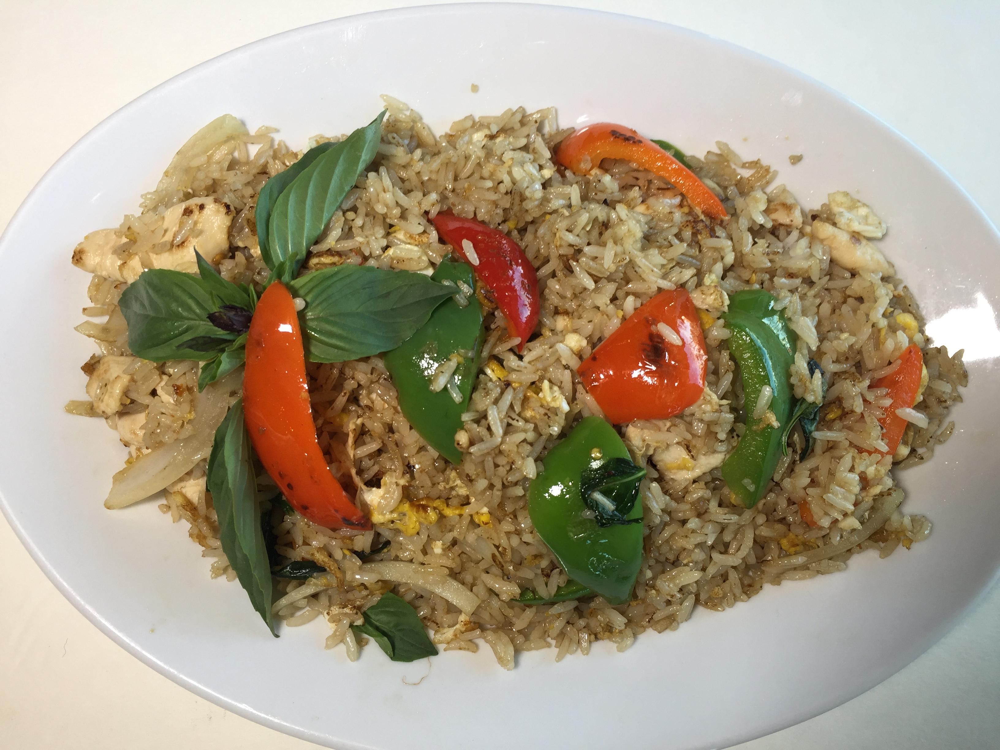
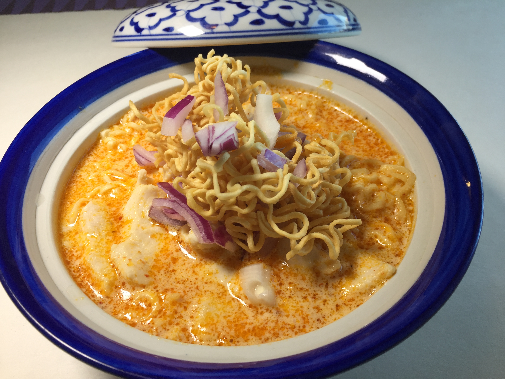
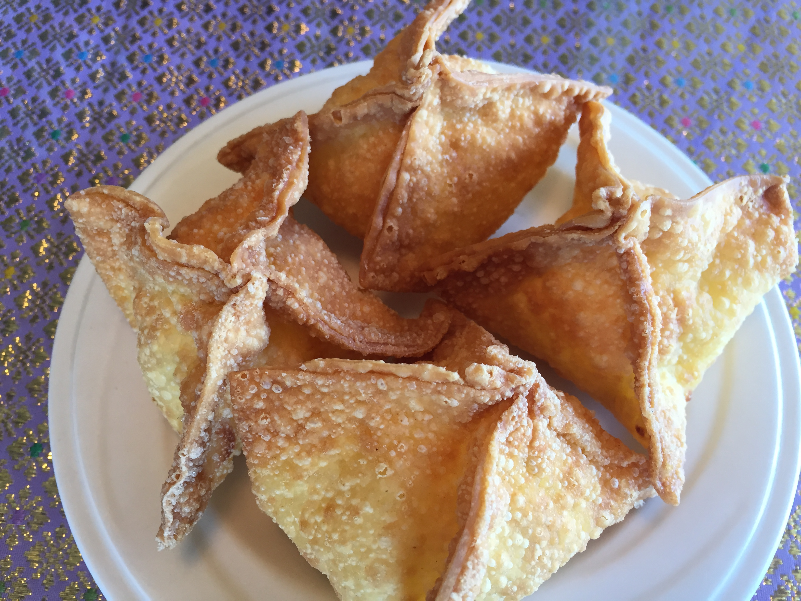
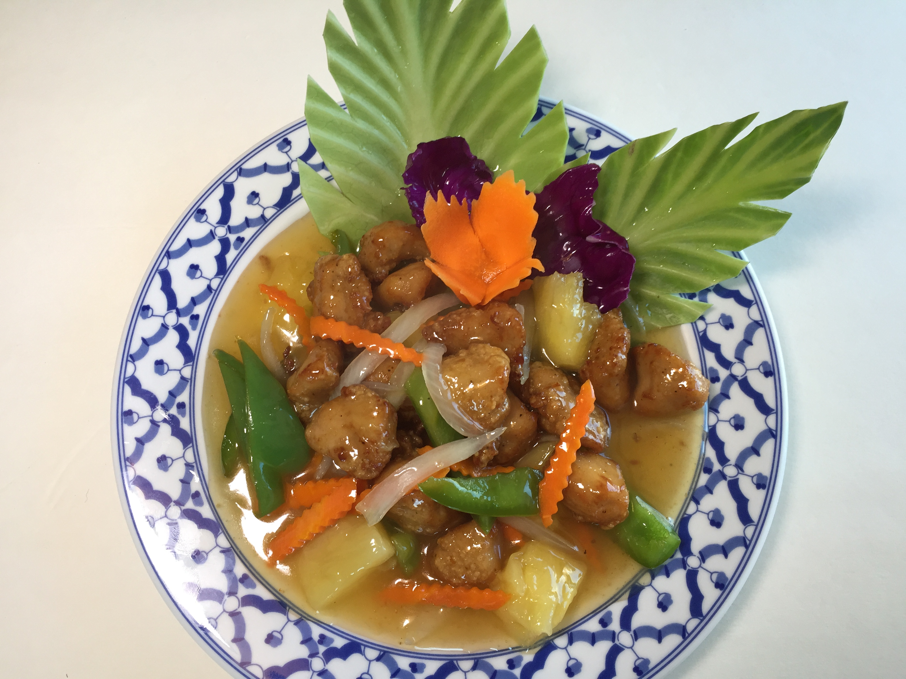
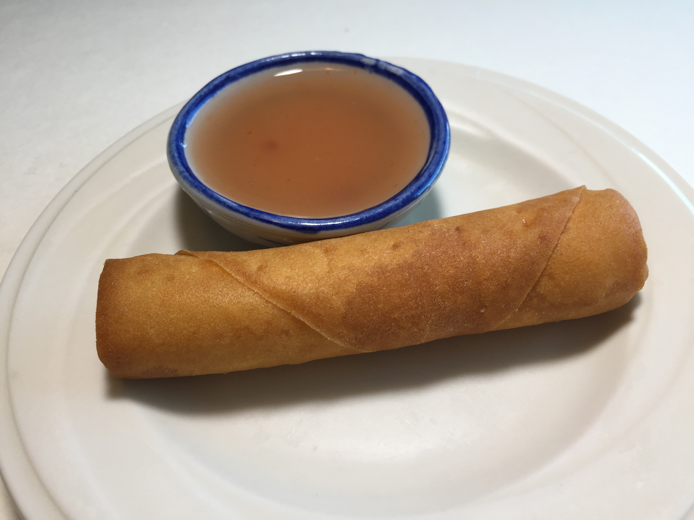
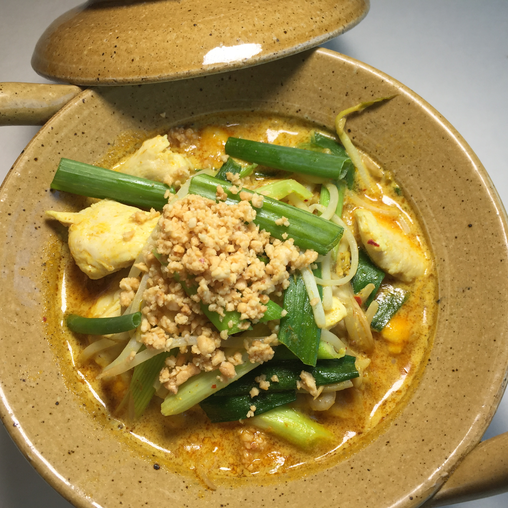

|  | KOW PAD GRA PRAW(BASIL) Fried rice with meat, egg, spicy Thai chili, onions, bell pepper, and basil. |
|  | LAI THAI NOODLE Steamed yellow noodle with meat or tofu in Lai Thai curry sauce, coconut milk and topped with red onion and crispy noodle. |
|  | CREAM CHEESE Fried cream cheese with pineapple in crispy skin. |
|  | PINEAPPLE CRISPY CHICKEN Lightly battered chicken topped with pineapple, onion, bell peppers and carrots in a tasty pineapple sauce glaze. |
|  | SPRING ROLL (1roll) Assorted vegetables, bean threads wrapped in Rice paper, deep fried and served with plum sauce. |
|  | RAMA NOODLE Steamed Rice noodle topped with yellow curry stew with meat or tofu, coconut milk, bean sprouts, topped with crushed peanuts and scallion. |